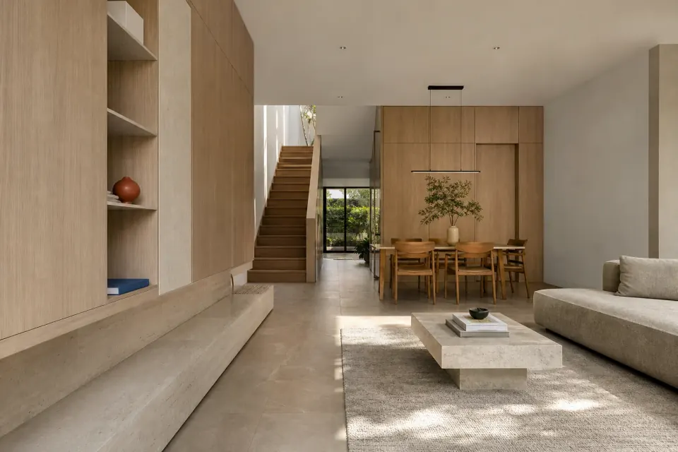
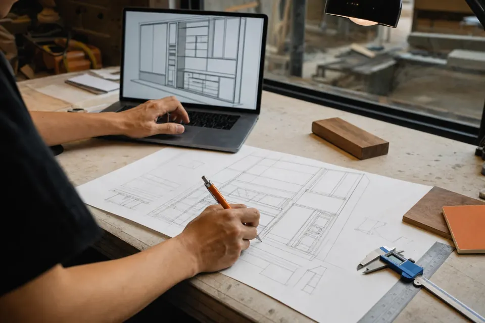
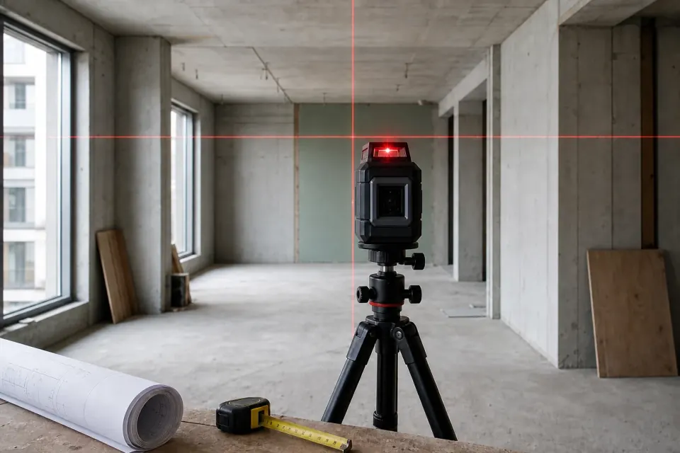
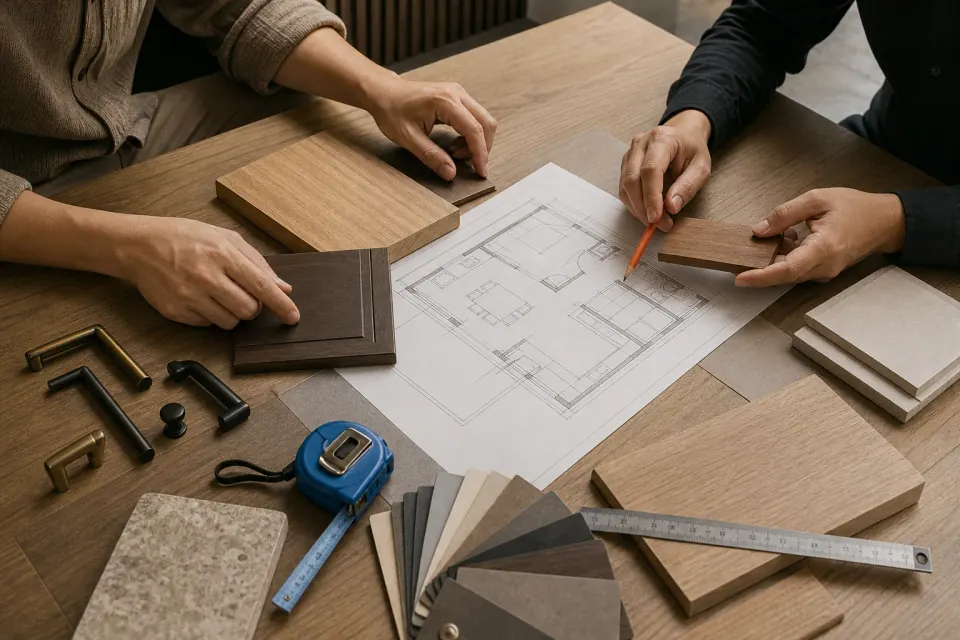
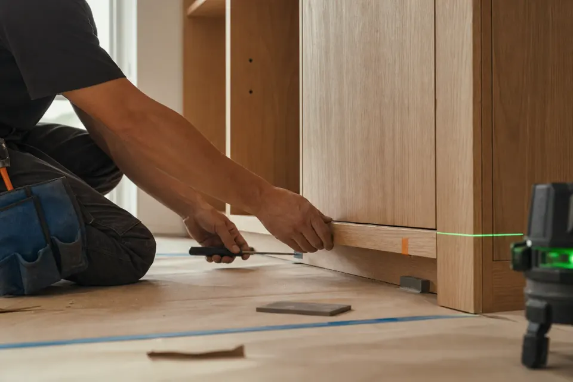
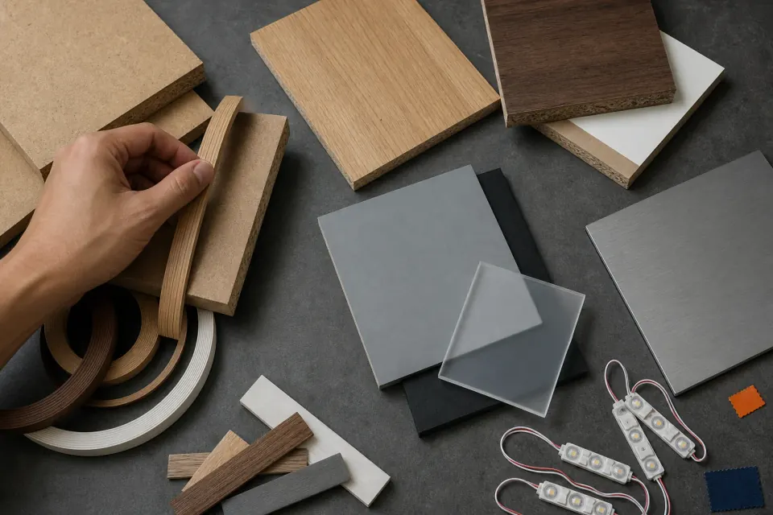
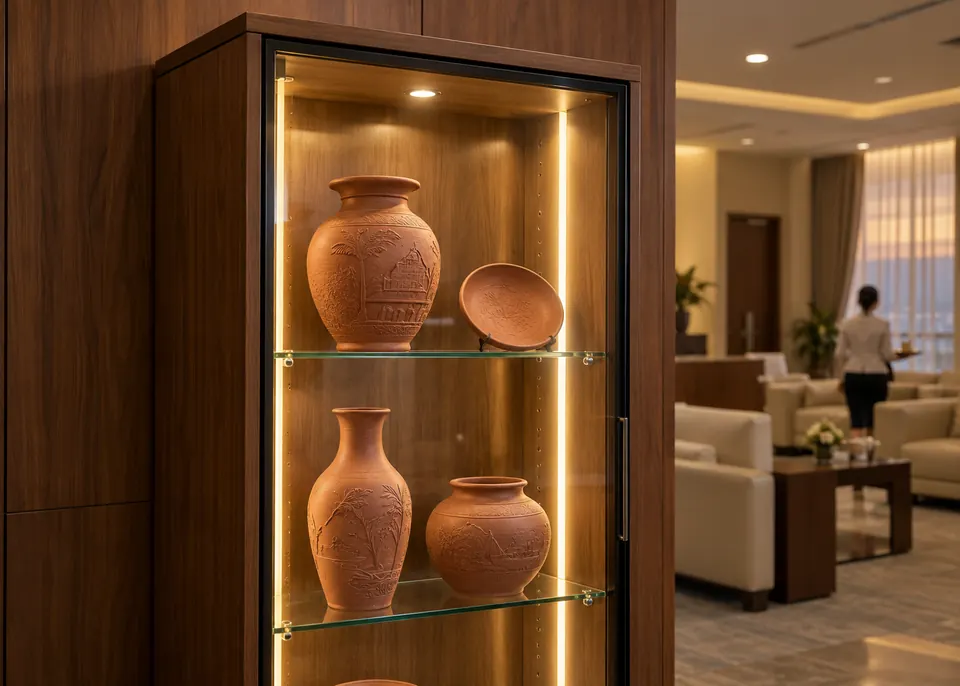
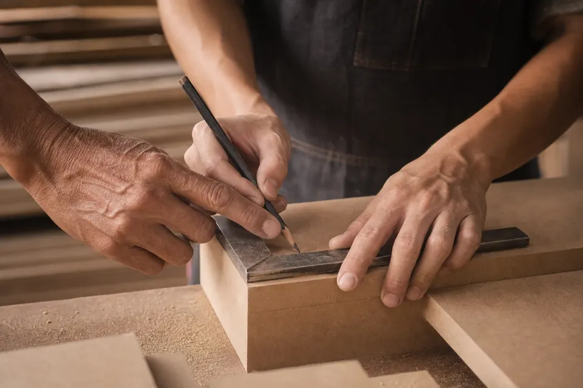

<!-- @dsCard group="Page" height=640 -->
<!-- GENERATED by scripts/docs/build-design-system.mjs from src/site/residential/index.html; do not edit. -->
<link rel="stylesheet" href="https://fonts.googleapis.com/css2?family=Plus+Jakarta+Sans:ital,wght@0,400;0,500;0,600;0,700;1,500&display=swap">
<script>document.documentElement.lang = "vi"; document.documentElement.classList.add("motion-fallback", "motion-ready");</script>
<section
          class="detail-gallery section-gap"
          id="cong-trinh"
          data-gallery
          data-header-tone="ink"
          aria-labelledby="gallery-title"
        >
          <div class="detail-gallery__head">
            <h2 id="gallery-title" data-motion-lines data-en="A HOME, IN LAYERS">
              MỘT NGÔI NHÀ, NHIỀU LỚP
            </h2>
            <div class="detail-gallery__controls">
              <button
                type="button"
                data-gallery-prev
                aria-label="Xem ảnh trước"
                data-en-aria-label="View previous image"
              >
                <span aria-hidden="true">←</span>
              </button>
              <button
                type="button"
                data-gallery-next
                aria-label="Xem ảnh tiếp theo"
                data-en-aria-label="View next image"
              >
                <span aria-hidden="true">→</span>
              </button>
            </div>
          </div>
          <div
            class="detail-gallery__track"
            data-gallery-track
            role="region"
            tabindex="0"
            aria-label="Bộ sưu tập nội thất nhà ở"
            data-en-aria-label="Gallery of residential interiors"
          >
            <figure class="detail-gallery__item media-hover-zoom-trigger">
              
              <figcaption data-en="Living &amp; gathering">
                Sinh hoạt &amp; quây quần
              </figcaption>
            </figure>
            <figure class="detail-gallery__item media-hover-zoom-trigger">
              
              <figcaption data-en="Planning &amp; flow">
                Mặt bằng &amp; luồng sống
              </figcaption>
            </figure>
            <figure class="detail-gallery__item media-hover-zoom-trigger">
              
              <figcaption data-en="Survey &amp; measure">
                Khảo sát &amp; đo đạc
              </figcaption>
            </figure>
            <figure class="detail-gallery__item media-hover-zoom-trigger">
              
              <figcaption data-en="Consult &amp; resolve">
                Tư vấn &amp; tháo gỡ
              </figcaption>
            </figure>
            <figure class="detail-gallery__item media-hover-zoom-trigger">
              
              <figcaption data-en="Produce &amp; control">
                Sản xuất &amp; kiểm soát
              </figcaption>
            </figure>
            <figure class="detail-gallery__item media-hover-zoom-trigger">
              
              <figcaption data-en="Install &amp; hand over">
                Lắp đặt &amp; bàn giao
              </figcaption>
            </figure>
            <figure class="detail-gallery__item media-hover-zoom-trigger">
              
              <figcaption data-en="Materials &amp; touch">
                Vật liệu &amp; cảm giác chạm
              </figcaption>
            </figure>
            <figure class="detail-gallery__item media-hover-zoom-trigger">
              
              <figcaption data-en="Storage &amp; finishing">
                Lưu trữ &amp; hoàn thiện
              </figcaption>
            </figure>
            <figure class="detail-gallery__item media-hover-zoom-trigger">
              
              <figcaption data-en="Craft &amp; continuity">
                Tay nghề &amp; tiếp nối
              </figcaption>
            </figure>
          </div>
        </section>
